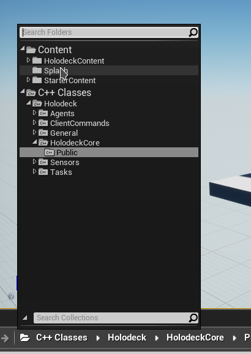
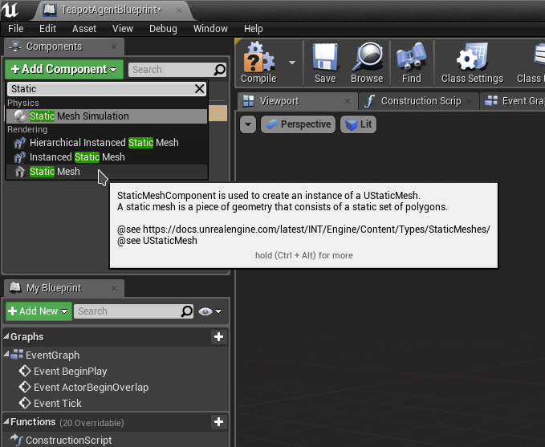
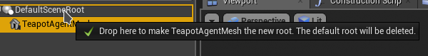
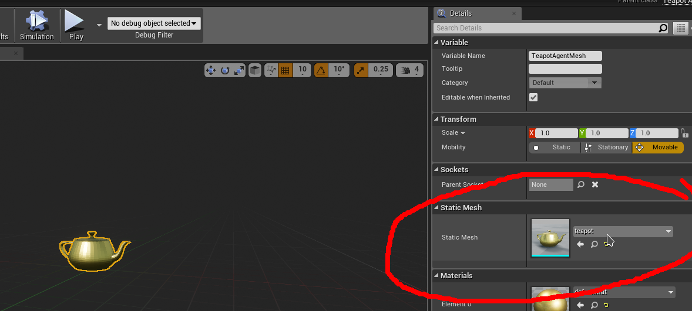

添加代理
友情提示
在 holodeck 中添加自定义代理并非易事。
如果您只是想要对现有代理进行一些修改，最好的办法可能是修改现有代理，例如替换模型或修改其行为。
概述
您需要修改 holodeck-engine 和 holodeck 这两个文件。请确保已完成这两个文件的设置并准备好进行开发（参见入门指南）。
尤其请遵循以下步骤：
在本教程中，我们将创建一个“TeapotAgent”。我们建议使用 Windows 系统，因为 UE4 在 Linux 上的运行尚不完善。
holodeck 变更
- 继承
HolodeckAgent类，并实现： agent_typecontrol_schemes__repr____act__- 为控制方案（
ControlSchemes类）创建标识符 - 向
AgentDefinition添加 type 键（将代理名称，例如"SphereAgent"，映射到类）
holodeck-engine 变更
- 子类：
HolodeckAgentHolodeckControlSchemeHolodeckPawnController- 创建蓝图
第 0 部分：验证开发环境
让我们确保您已准备好构建 holodeck。
打开 holodeck-engine 中的 holodeck.uproject 文件。它可能会提示需要重新构建，请允许它重新构建。虚幻引擎编辑器应该会打开并显示示例关卡。

在编辑器中，选择“文件”->“刷新 Visual Studio 项目”。现在您应该可以在 Visual Studio 中打开该项目了。构建项目并确保没有错误。
第一部分：虚幻引擎变更
背景知识请参阅 UE4 控制器说明。在 holodeck 中，代理控制器主要用于初始化和配置控制方案。控制方案将客户端的输入映射到 UE4 对象上的动作。
在本示例中，我们不会实现控制方案或复杂的控制器，代理将只有一个硬编码的控制方案。如果您想实现此功能，可以参考无人机示例。
创建 C++ 类
1.在编辑器中，点击内容浏览器中的文件夹图标，将其更改为“C++ 类”。导航至 Holodeck\HolodeckCore\Public 目录。

2.右键单击“HolodeckPawnController”，然后选择“创建继承自 HolodeckPawnController 的 C++ 类”。
3.将名称设置为“HolodeckPawnController”，并将路径更改为
holodeck-engine/Source/Holodeck/Agents/Public/
4.确保项目仍然可以构建（在编辑器中单击“编译”按钮）
5.由于我们只有一个控制方案，因此 TeapotAgentController 实际上不需要执行任何操作。为了简洁起见，我们将所有内容都放在头文件中。打开您的 IDE，并将以下内容添加到 TeapotAgentController.h 中：
#pragma once
#include "CoreMinimal.h"
#include "HolodeckCore/Public/HolodeckPawnController.h"
#include "TeapotAgentController.generated.h"
/**
*
*/
UCLASS()
class HOLODECK_API ATeapotAgentController : public AHolodeckPawnController
{
GENERATED_BODY()
public:
ATeapotAgentController(const FObjectInitializer& ObjectInitializer)
: AHolodeckPawnController(ObjectInitializer) {
UE_LOG(LogTemp, Warning, TEXT("TeapotAgentController Initialized"));
}
/**
* Default Destructor
*/
~ATeapotAgentController() {};
void AddControlSchemes() override {
// no control schemes
}
};
Holodeck/HolodeckCore/Public/HolodeckAgent 类，并创建 TeapotAgent 类，重复步骤 2-4。
7.为了简洁起见，我们将所有实现代码都放在头文件中。TeapotAgent.h：
#pragma once
#include "CoreMinimal.h"
#include "HolodeckCore/Public/HolodeckAgent.h"
#include "TeapotAgent.generated.h"
/**
*
*/
UCLASS()
class HOLODECK_API ATeapotAgent : public AHolodeckAgent
{
GENERATED_BODY()
// ^ 不要惹怒这个宏，否则会发生不好的事情。
public:
ATeapotAgent() {
this->PrimaryActorTick.bCanEverTick = true;
// 加载控制器并将其设置为默认控制器。
this->AIControllerClass = LoadClass<AController>(NULL, TEXT("/Script/Holodeck.TeapotAgentController"), NULL, LOAD_None, NULL);
this->AutoPossessAI = EAutoPossessAI::PlacedInWorld;
};
void InitializeAgent() override {
Super::InitializeAgent();
RootMesh = Cast<UStaticMeshComponent>(RootComponent);
};
void Tick(float DeltaSeconds) override {
float max_thrust = 10.0f; // 米
// 将推力限制在 +/- 10 以内
FVector Impulse = FVector(
FMath::Clamp(this->CommandArray[0], -max_thrust, max_thrust),
FMath::Clamp(this->CommandArray[1], -max_thrust, max_thrust),
FMath::Clamp(this->CommandArray[2], -max_thrust, max_thrust)
);
// Holodeck 的单位是米，但UE4使用厘米。提供一个辅助函数来实现这两种单位之间的转换。
Impulse = ConvertLinearVector(Impulse, ClientToUE);
// 请注意，这不会将脉冲旋转到代理的参考系中，因此脉冲与世界对齐，请查看 TurtleAgent.cpp。
this->RootMesh->AddForce(Impulse);
if (static_cast<bool>(this->CommandArray[4])) {
// 开启茶壶模式！茶壶在茶壶模式下会变大。
this->RootMesh->SetWorldScale3D(FVector(2));
} else {
this->RootMesh->SetWorldScale3D(FVector(1));
}
};
UPROPERTY(BlueprintReadWrite, Category = UAVMesh)
UStaticMeshComponent* RootMesh;
// 此函数的大小应与 CommandArray 的大小相匹配。Holodeck 使用此值在引擎/服务器和客户端/Python 解释器之间分配共享内存缓冲区。
unsigned int GetRawActionSizeInBytes() const override { return 4 * sizeof(float); };
// 客户端发送的操作将被复制到此缓冲区中。
void* GetRawActionBuffer() const override { return (void*)CommandArray; };
// 这跟 AbuseSensor 器有关。将其设置为 -1 即可禁用它，茶壶威力很大。
float GetAccelerationLimit() override { return 400; }
private:
/**
* 0: x 方向冲力
* 1: y 方向冲力
* 2: z 方向冲力
* 3: 启动茶壶模式 (t/f)
*/
float CommandArray[4];
};
创建代理蓝图
我们已经为代理创建了一个 C++ 类，但大多数代理都是继承自该 C++ 类的蓝图，因为在蓝图中可以更轻松地完成许多操作。
1.找到 TeapotAgent，右键单击并选择“基于 TeapotAgent 创建蓝图类”，将其命名为 TeapotAgentBlueprint，并将其放置在 Content/HolodeckContent/Agents/TeapotAgent/ 目录下。此时会打开另一个编辑器窗口。
2.点击左上角的“添加组件”，添加一个“静态网格体”，并将其命名为 TeapotAgentMesh。

3.将 TeapotAgentMesh 拖到 DefaultSceneRoot 上方，使其成为新的根组件。

4.在右侧，将静态网格设置为teapot（holodeck中包含一个茶壶网格）。
